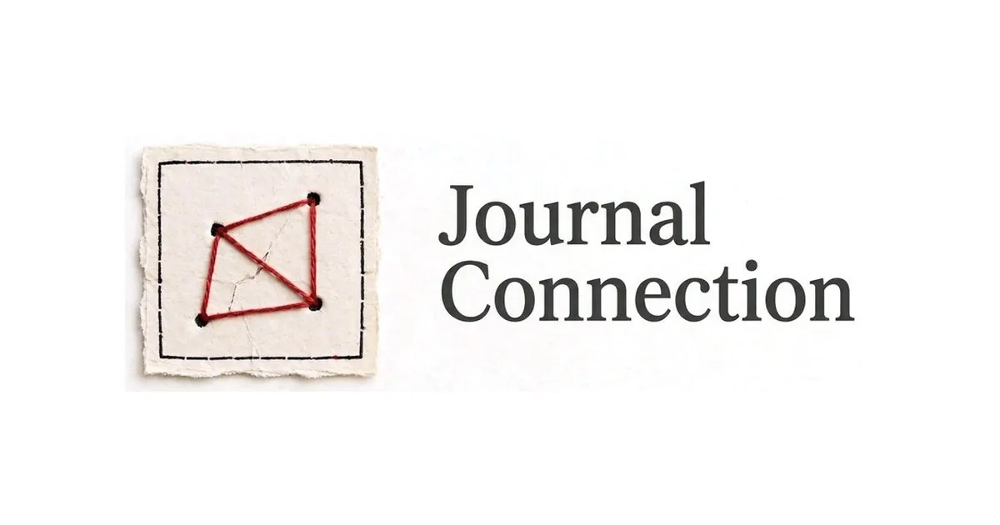

Social network · 250 characters
Jurkon (Jurnal Koneksi)
An Indonesian-made social network: posts are limited to 250 characters, the feed has an end, and you can leave a note for yourself a year from now.
HTML/CSS/JSSupabasePWAGitHub Actions

250Characters per post
5Display themes
11+Interface languages
5GitHub automation workflows
Problem
Social media pushes us to scroll endlessly and post without thinking. People need a calmer place to write and connect.
Solution
Jurkon caps posts at 250 characters, gives the feed a real end, and adds notes-to-self that arrive a year later. The result feels like a journal you can share.
Key features
- Mutual-follow messaging rules and Following notifications
- Public profiles, covers and privacy settings
- Five themes, including Glass and Cloud
- Multilingual interface (id, en, ar, ja, ko, zh and more)
- Backups, tests and keep-alive via GitHub Actions